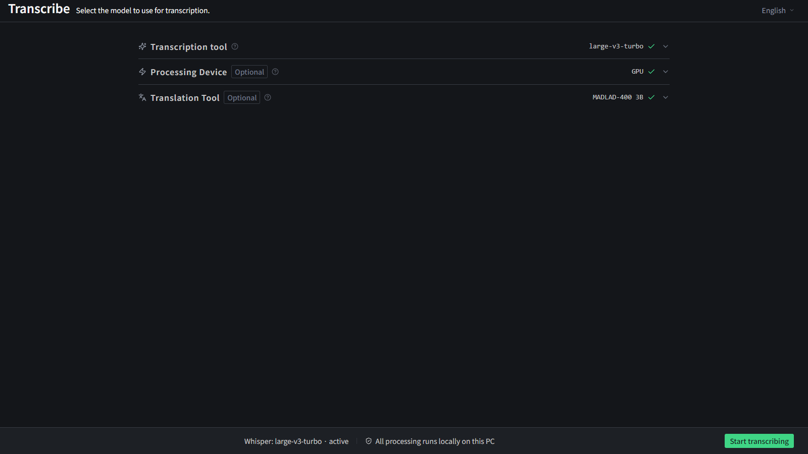
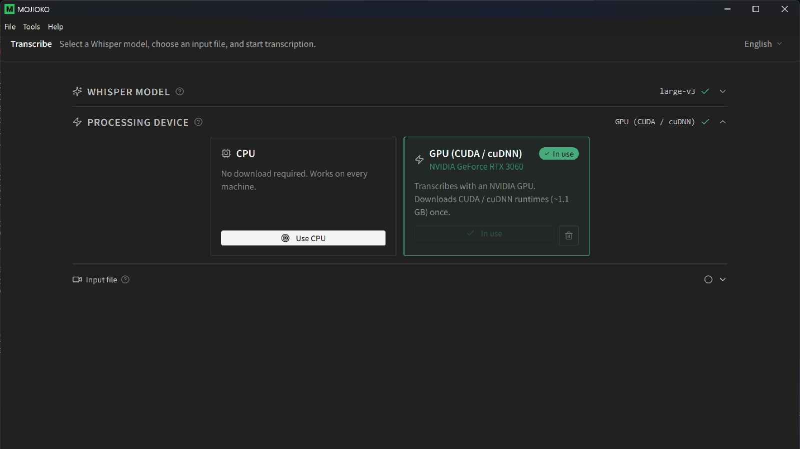
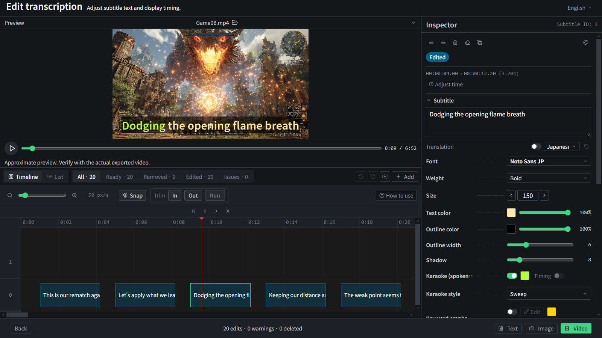
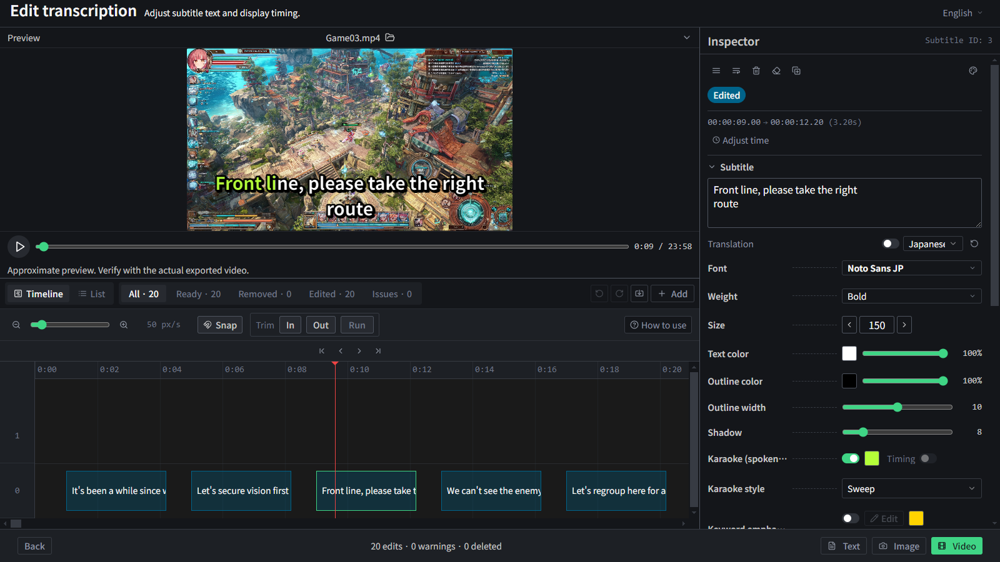
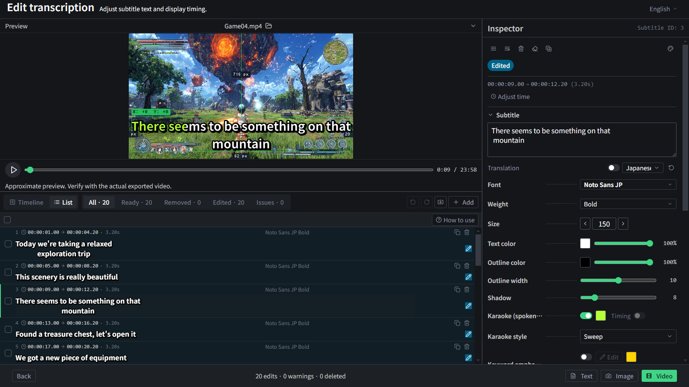
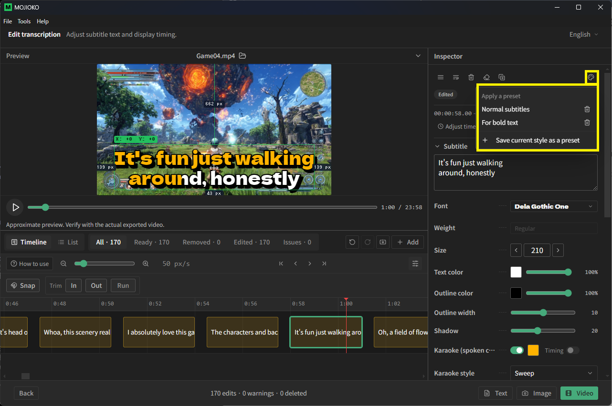
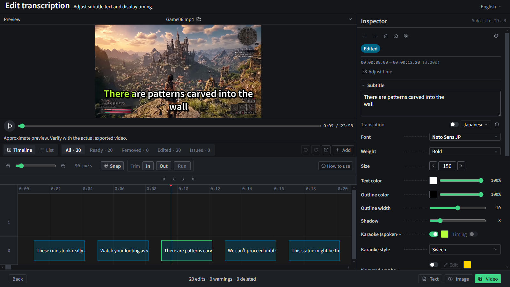

Main features

High-accuracy automatic transcription
Automatically transcribe speech from video or audio using Whisper, a high-accuracy speech-recognition AI developed by OpenAI. Even long videos are transcribed into text in one go.
Works with both video and audio files. For videos with multiple audio tracks, you can pick which track to transcribe.
💡 Multiple audio tracks?Videos where different sounds — like game audio and mic voice — are recorded separately. MOJIOKO lets you transcribe just the voice.

GPU acceleration screen(images/e-gpu.png)
GPU acceleration
Run Whisper on an NVIDIA GPU for significantly faster transcription. Even long videos finish in a fraction of the time compared to CPU.
The CUDA / cuDNN runtime (~1.1 GB) downloads once from inside the app on first use — no separate CUDA install required.
A GPU is optional; MOJIOKO runs on CPU without one. The latest NVIDIA generations, including RTX 50 series (Blackwell), are supported.
💡 Limitations & detailsNVIDIA GPUs only (AMD / Intel GPUs are not supported). See the GPU acceleration section of the User Guide for details.
Flexible subtitle editing

Edit text and appearance freely
Fix the transcribed text, and adjust the font, size, color, and outline color/thickness.

Adjust timing on the timeline
Drag to change how long each subtitle stays on screen.

Review and edit in a list view
See all subtitles at once and edit them in bulk. It stays quick even with thousands of subtitles.

Style presets screen(images/e-preset.png)
Reuse a look with style presets
Save a look you have built and apply it to other subtitles in one click.
💡 Timeline?A horizontal bar showing the flow of time in your video, so you can edit when each subtitle appears.

Export as text or SRT
Export the transcription as a plain text file or in SRT format.
With SRT, import subtitles — complete with start/end times — into video editors like DaVinci Resolve.
You can also load the exported text into speech tools like VOICEVOX to generate voices.
💡 SRT?The standard subtitle file format, pairing each line of text with its on-screen timing. Supported by most video editors and platforms.

Burn in subtitles and export video
Burn your edited subtitles directly into the video.
Merge multiple audio tracks into one. Burn subtitles into your already-edited video and export it in a form you can upload as-is.
💡 Burn-in?Embedding subtitles into the video itself, so they always show on any player.